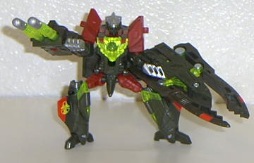
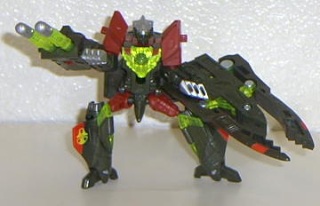

Beast
Machines: Battle for the Spark
Beast
Machines: Battle for the Spark
 

It was near the end of the
year 2000, and although the Beast Machines toyline still sold somewhat
well, it wasn't selling well enough. To give the Beast Machines line a
well-needed kick, Hasbro decided to name the second-season Beast Machines
toys "Beast Machines: Battle for the Spark" figures. This led to a slight
change in the packaging makeup, but there was also an added gimmick on
each one of the toys; by pushing or sliding a piece with the Transformer's
"spark crystal" on it, you could perform the toy's action feature. Although
the overall style was still kept mostly the same as the older Beast Machines
toys, the designs were overall more show-accurate, and, in my opinion,
much more well-designed than the original Beast Machines toys.
Sadly, however, it was too
little too late. By the time the "Battle for the Spark" figures reached
shelves, interest in Beast Machines had dwindled quite a bit, due to the
ending of the TV show of Fox Kids just weeks before. Because of their predecessor's
poor reputation and sales, the Battle for the Spark figures still managed
to sell relatively poorly for Transformers, and their distribution was
somewhat limited- in fact, Canada didn't even get any of the Battle for
the Spark figures after the first wave! Thus, the Battle for the Spark
toys ended a bit prematurely in late spring 2001, not even releasing the
last two toys of the toyline on the list (called "Megabolt Megatron" and
"Air Attack Optimus Primal"), which were shunted later into
Robots
in Disguise
. Still, these toys were, in effect, the big "bang" that
ended Beast Machines, and what a bang it was.
The same show-accurate ratings
apply to the Battle for the Spark show-character toys that applied to those
in the original
Beast Machines
toyline:
?- Little relation
!- A moderate amount of relation
!!- A good amount of relation
!!!- Looks almost exactly
like the TV counterpart
 Battle
Unicorn
Battle
Unicorn
Beast
Changer (aka Savage Noble)
Cheetor
(Night Slash)
Hammerstrike
Motorcycle
Drone
Optimus
Primal (Blast Punch)
Spy
Streak
Strika
Tank
Drone
Back to Model
Commentary Index